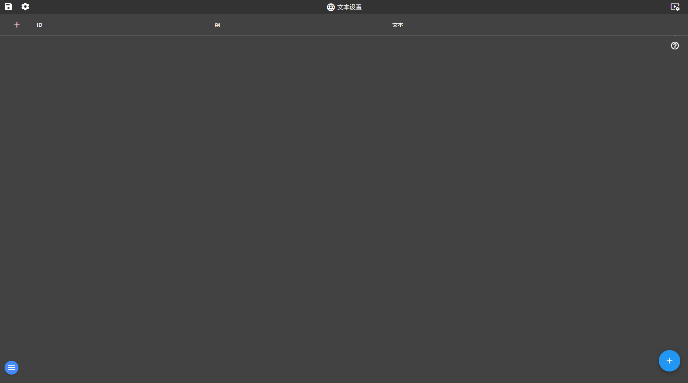

18. 语言、日志、配方、地图、AR、实验室
入口：菜单「系统」→ 语言 / 日志 / 配方 / 地图 / AR / 实验室
功能概述
这些模块覆盖平台的中文化与辅助能力：界面语言切换、运行日志查看、配方模板管理、地图点位、AR 标记与实验室工具页。
界面说明

语言、日志、配方、地图、AR、实验室（当前交付版实际截图）
界面上真实可见的元素（按当前交付版实测）
| 区域 | 实际内容 |
|---|
| 按钮 / 图标 | 保存项目、编辑项目、视频墙、视频监控、传感器标定、开诚智枢帮助、add |
| 列表表头 | add、ID、组、文本 |
逐步操作
- 语言页切换界面语言（简体中文/英文/俄文），切换后界面文案即时变化。
- 日志页查看服务端日志；大日志只渲染尾部（约 5 万字符），保证页面不卡。
- 配方页管理配方模板：新增条目、选择标签、设定参数，供运行态调用。
- 地图页维护点位坐标，供画面上的地图控件使用。
- AR 页维护 AR 标记，运行态用摄像头识别标记叠加画面。
- 实验室页是平台自带的测试与工具入口。
常见问题
- 日志页只显示尾部？这是有意设计（防大文件卡页），完整日志在工程目录 _logs 下。
- 配方怎么用？运行态画面通过配方控件选择并下发。
- AR 需要什么？需要支持摄像头的设备与已登记标记。
返回目录